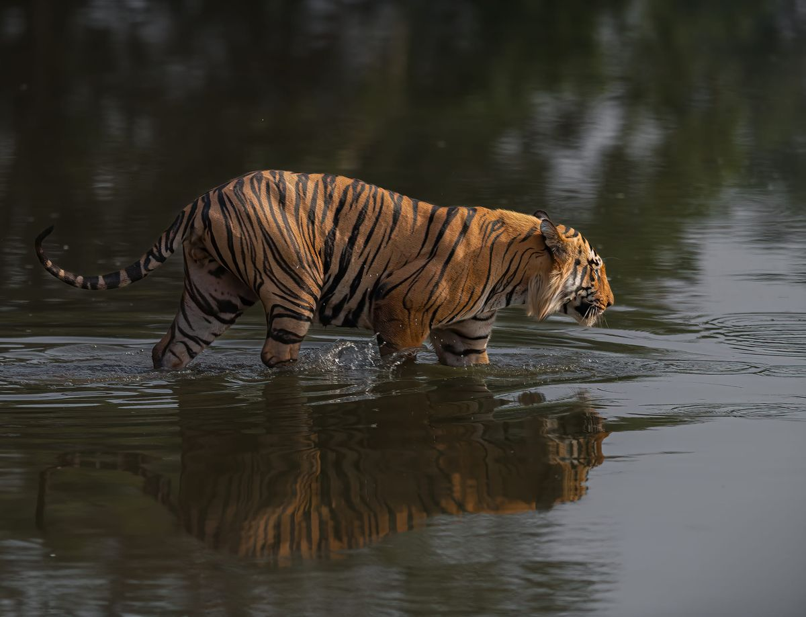
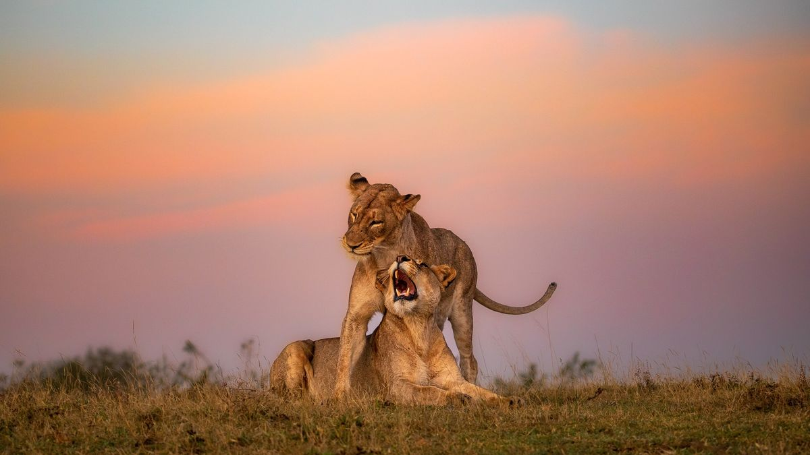

Mamíferos
vias de extinção



Mamíferos são animais que têm algumas características, como possuir
pelos e, na maioria das vezes, terem sangue quente(ter temperaturas constantes).Eles podem
viver em diferentes ambientes,
como florestas, oceanos e até desertos
Animais em vias de extinção são aqueles que estão muito ameaçados de
desaparecer completamente do planeta. Isso acontece devido a fatores como a perda de
habitat, a caça excessiva, a poluição e outras ações humanas que prejudicam suas populações.
Em Portugal, os animais que estão em risco de extinção podem ser
encontrados em diferentes habitats do país, como áreas protegidas, parques naturais e zonas
costeiras.Como por exemplo:
Parque Natural do Douro Internacional;
Parque Natural do Douro Internacional;
Parque Natural do Sudoeste Alentejano e Costa Vicentina
Reserva Natural do Estuário do Sado;
Parque Natural da Ria Formosa